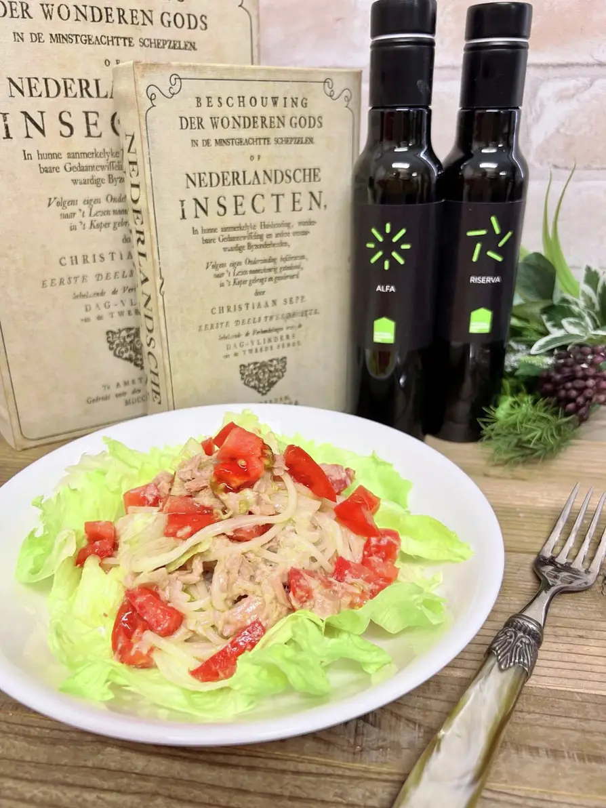
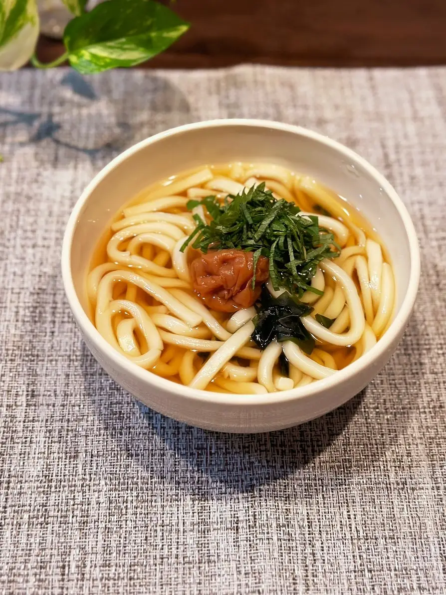
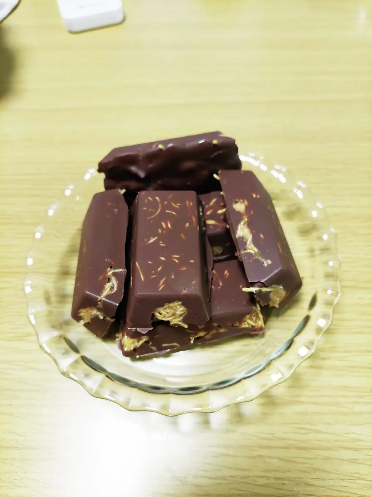
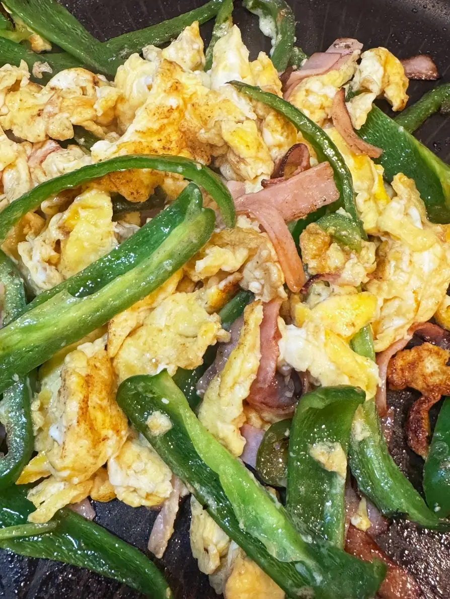

最新のレシピ
甘辛豚肉と茄子の味噌炒め

材料:
- 豚肉薄切り(肩ロースorバラ) - 250g
- 茄子 - 2本
- ピーマン - 1～2個
- 酒，黒胡椒 - 少々
- コマ油/サラダ油 - 各大さじ1/2
- ↓＜甘辛ダレ＞↓
- 甜麺醤 - 大さじ1/2
- コチュジャン - 小さじ1
- 醤油 - 小さじ1
- 大葉 - 適量
- 酒 - 大さじ1.5
- みりん - 大さじ1/2
- ニンニクチューブ - 3cm
作り方:
- ピーマン・茄子を乱切りにする．
- 豚肉を一口大に切り下味をつける．
- 甘辛ダレを混ぜておく．
- 先にごま油・サラダ油を半量ずつ入れた冷たいフライパンで切った茄子に油をまとわせる．
- 中火をかけ，フライパンが熱くなったらごま油少量を足してピーマンを加えて全体を炒めて一旦取り出す．
- フライパンのからスペースに甘辛ダレを流して津フツ付したら全体に絡めて完成．
ヨーグルトソースのサラダうどん

材料:
- 乾麺うどん 200g
- ヨーグルト(無糖) 大さじ4
- 粉チーズ 大さじ2
- 塩 小さじ1
- エキストラバージンオリーブオイル 大さじ2
- 胡椒 少々
- ツナ缶 140g
- トマト 小玉2個
- レタス 70g
- 酒 - 50ml
作り方:
- たっぷりのお湯で沸騰したら乾麺を固めにゆでる。約7分、差し水2回。
- 大き目の1つのボールに材料分の材料を次々と入れていきます。 粉チーズ→塩→オリーブオイル→ツナ→胡椒→レタス→トマトの角切り→うどん→ヨーグルトとよく混ぜる
- レタスをまわりに敷いて真ん中に盛り付けます。
- 食べる前にフレッシュなエクストラバージンオリーブオイルを掛けましょう
梅うどんの紫蘇添え

材料:
- うどん 1玉
- めんつゆ（4倍濃縮） 30cc
- 水 180cc
- 酢 小さじ1
- 梅干し 1粒
- わかめ 適量
- 紫蘇 2枚
作り方:
- うどんを茹でて器に入れる。
- 水を鍋で煮立てて、うどんの器に入れる。
- 酢も入れる。
- わかめ、梅、紫蘇をトッピングする．
ドバイチョコ風アレンジチョコ

材料:
- 板チョコ 4枚
- ピーナツクリーム 1個
- 無塩バター 10g～30g
- 皿うどんの麺 適量
作り方:
- ピーナツクリームと無塩バターを耐熱ボールに入れて20秒程レンジで温め、無塩バターを溶かす
- ピーナツクリームをよく混ぜて、皿うどんを適量割り入れる。
- 皿うどんの麺がよく絡むように混ぜた後，任意の形の方に流しいれる．
- 冷蔵庫で冷やし固めたら出来上がり．
ピーマンと卵炒め

材料:
- ピーマン 4個
- ハムorベーコン 4枚
- 油 小さじ2
- バター 10g
- 卵 2個
- 塩コショウ 各少々
- 醤油 小さじ2
作り方:
- ピーマンとハムorベーコンを細切りにして油で炒める
- 炒めたらフライパンの端に寄せて、バターと卵をふんわり炒める。
- 塩コショウと醤油をかけて出来上がり。
マルゲリータ

材料:
- ピザ生地 - 1枚
- トマトソース - 100g
- モッツァレラチーズ - 100g
- バジル - 適量
- オリーブオイル - 大さじ1
作り方:
- ピザ生地にトマトソースを塗る。
- モッツァレラチーズを散らす。
- バジルを乗せ、オリーブオイルをかける。
- 予熱したオーブンで焼く（約10分）。
- 焼きあがったら、再度バジルを飾る。
餃子

材料:
- 豚ひき肉 - 300g
- キャベツ - 200g
- ニラ - 50g
- 餃子の皮 - 30枚
- 醤油 - 大さじ2
- 酒 - 大さじ1
- ごま油 - 大さじ1
- にんにく - 1片
- しょうが - 1片
作り方:
- キャベツとニラを細かく刻む。
- ボウルに豚ひき肉、キャベツ、ニラ、醤油、酒、ごま油、すりおろしたにんにくとしょうがを加えて混ぜる。
- 餃子の皮に適量の具を乗せ、縁に水をつけて包む。
- フライパンに油を熱し、餃子を並べる。
- 底がきつね色になったら、水を加え蓋をして蒸し焼きにする。
- 水がなくなり、皮が透明になったら蓋を外して焼き目をつける。